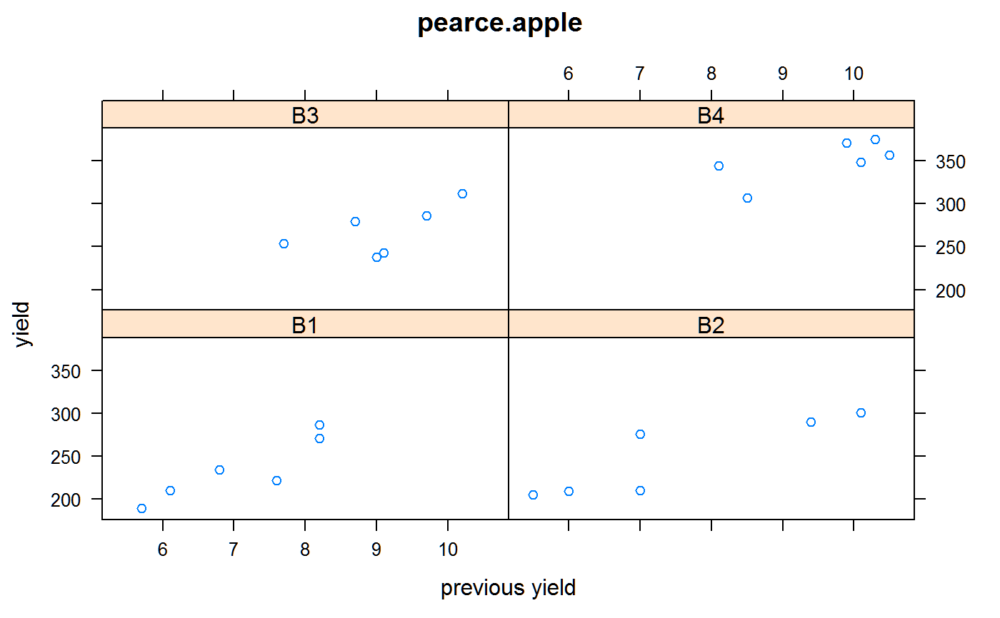

pearce.apple.RdApple tree yields for 6 treatments with covariate of previous yield.
A data frame with 24 observations on the following 4 variables.
blockblock factor, 4 levels
trttreatment factor, 6 levels
prevprevious yield in boxes
yieldyield per plot
Treatment 'S' is the standard practice in English apple orchards of keeping the land clean in the summer.
The previous yield is the number of boxes of fruit, for the four seasons previous to the application of the treatments.
S. C. Pearce (1953). Field Experiments With Fruit Trees and Other Perennial Plants. Commonwealth Bureau of Horticulture and Plantation Crops, Farnham Royal, Slough, England, App. IV.
James G. Booth, Walter T. Federer, Martin T. Wells and Russell D. Wolfinger (2009). A Multivariate Variance Components Model for Analysis of Covariance in Designed Experiments. Statistical Science, 24, 223-237.
library(agridat) data(pearce.apple) dat <- pearce.apple libs(lattice) xyplot(yield~prev|block, dat, main="pearce.apple", xlab="previous yield")# Univariate fixed-effects model of Booth et al, using previous # yield as a covariate. m1 <- lm(yield ~ trt + block + prev, data=dat) # Predict values, holding the covariate at its overall mean of 8.3 newdat <- expand.grid(trt=c('A','B','C','D','E','S'), block=c('B1','B2','B3','B4'), prev=8.308333) newdat$pred <- predict(m1, newdata=newdat) # Average across blocks to get the adjusted mean, Booth et al. Table 1 tapply(newdat$pred, newdat$trt, mean)#> A B C D E S #> 280.4765 266.5666 274.0666 281.1370 300.9175 251.3357# A B C D E S # 280.4765 266.5666 274.0666 281.1370 300.9175 251.3357 # Same thing, but with blocks random libs(lme4) m2 <- lmer(yield ~ trt + (1|block) + prev, data=dat) newdat$pred2 <- predict(m2, newdata=newdat) tapply(newdat$pred2, newdat$trt, mean)#> A B C D E S #> 280.4041 266.5453 274.0453 281.3329 301.3432 250.8291# A B C D E S # 280.4041 266.5453 274.0453 281.3329 301.3432 250.8291